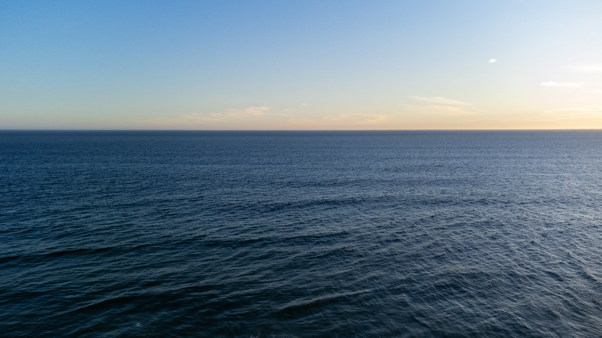
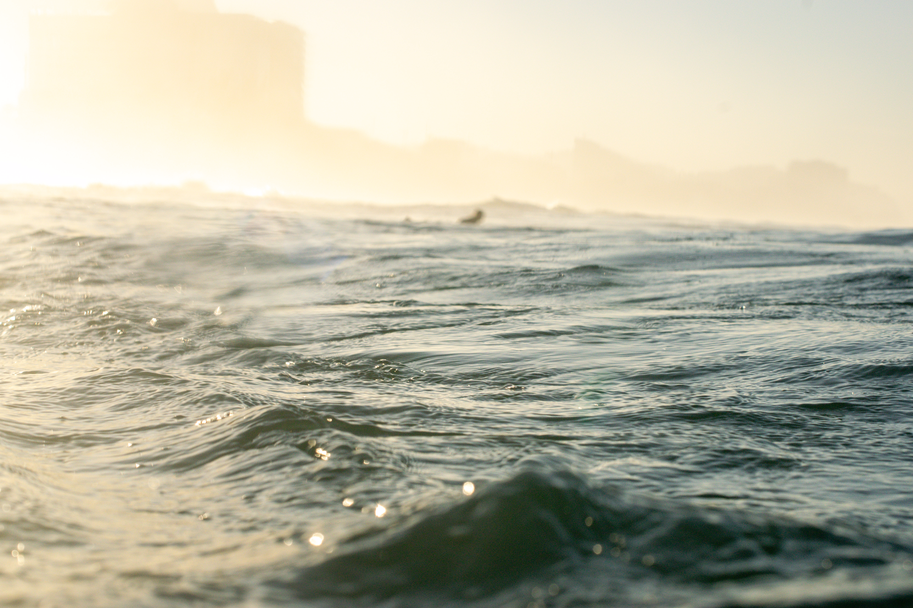
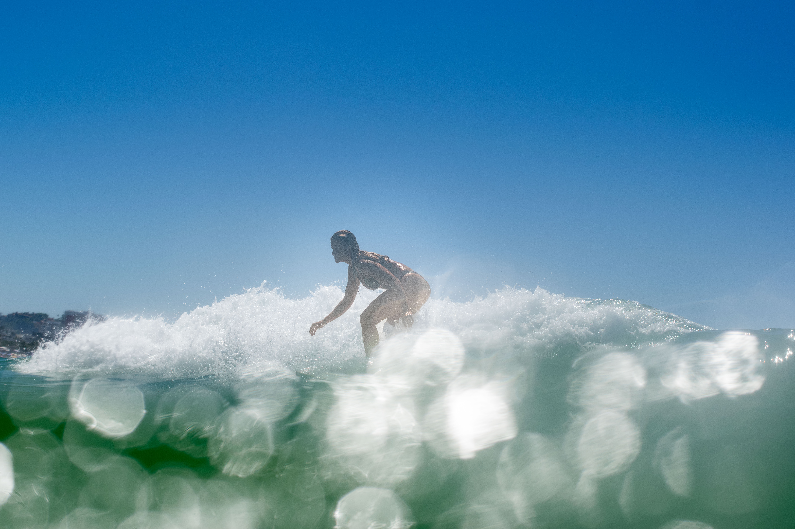
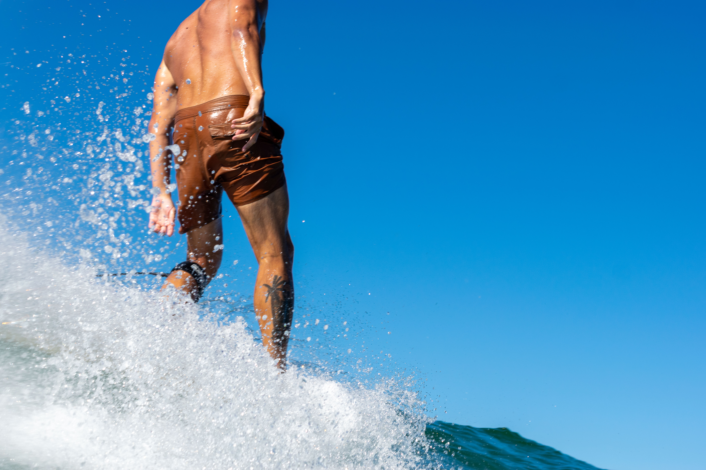
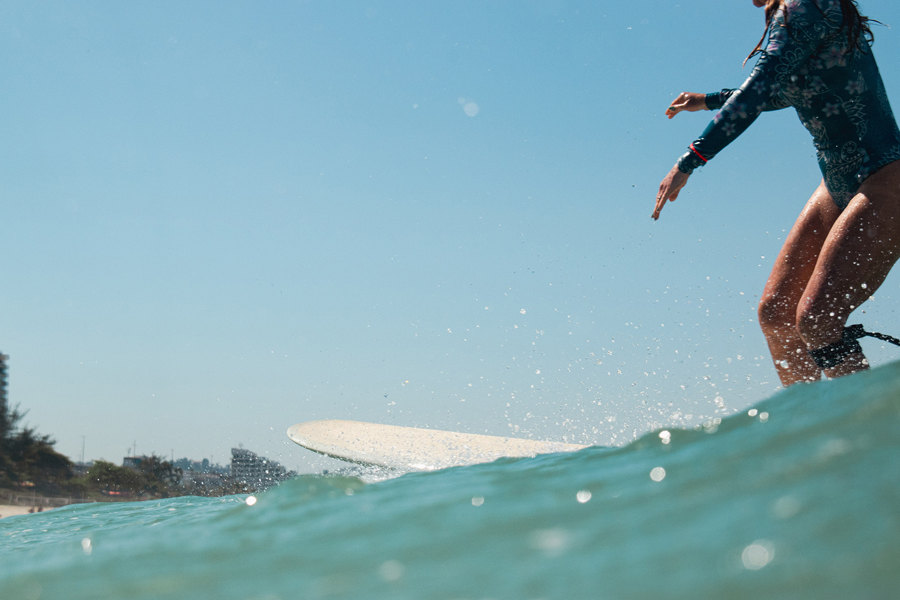
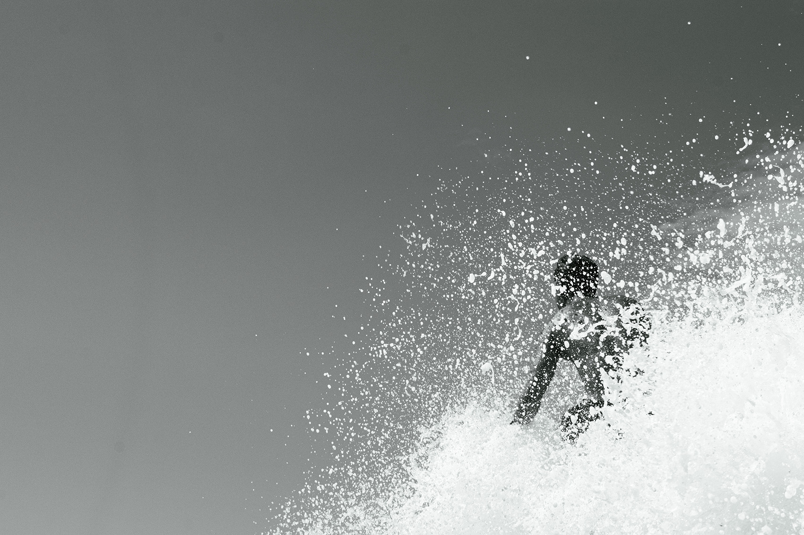
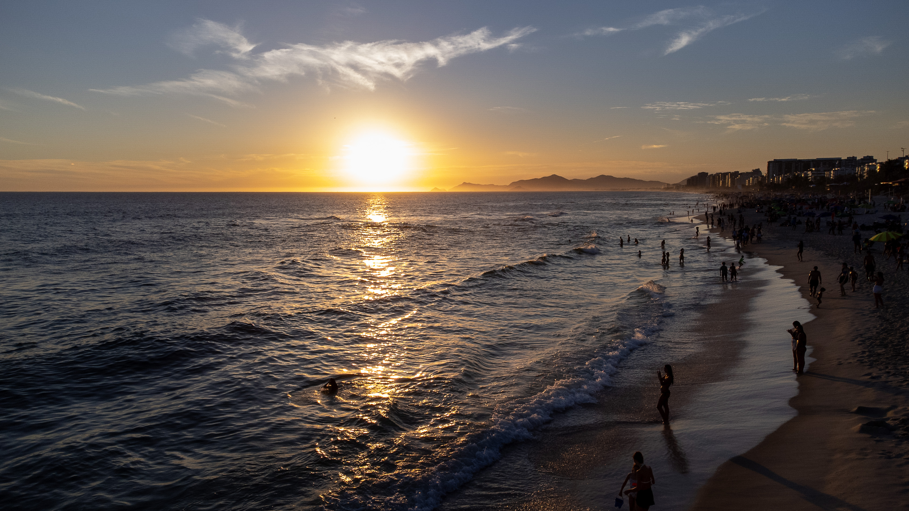

Como encaixar imagens verticais no grid atual (2 colunas). As fotos marcadas com o badge “9:16” são crops simulados a partir das imagens da galeria.
Variante A
Comportamento próximo do atual: cada foto define a altura da célula. Verticais ficam bem altas e desalinhadas na linha — funciona, mas o ritmo fica irregular.





Variante B
Todas as células têm a mesma proporção. Verticais e horizontais são cortadas com object-fit: cover.
Grid limpo e uniforme — perde um pouco das bordas da foto.
Variante C
A foto 9:16 ocupa a altura de duas células. As paisagens ao lado se empilham. Bom equilíbrio entre destacar o vertical e manter o grid organizado.
Variante D
Fluxo em colunas: cada foto mantém a proporção real e o layout se acomoda sozinho. Visual de portfólio clássico — a ordem de leitura sobe/desce por coluna, não linha a linha.


Variante E
Cada “par” junta uma 9:16 com uma paisagem na mesma altura (proporção ~9+16). Exige ordenar as fotos em pares; o vertical ganha destaque sem quebrar o alinhamento.